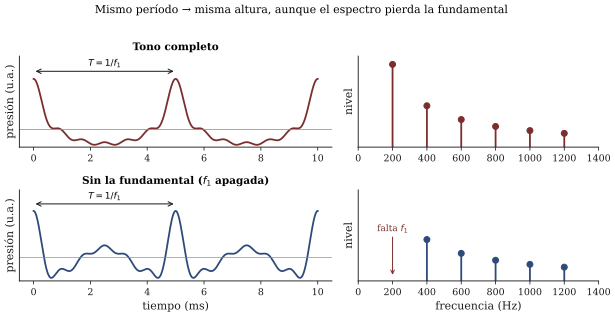
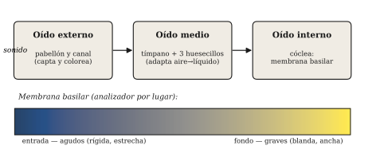
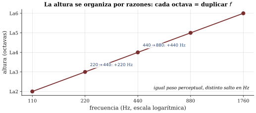

La altura percibida
Sesión 05 · Curso Acústica Musical UC Objetivos que cubre: OA2.1 (el par frecuencia↔︎altura no es lineal ni unívoco; octava como duplicación), OA2.2 (demostrar y explicar la fundamental ausente / altura virtual). OA3.1 transversal en la escucha del día.
¿Dónde está el bajo que sale de un parlante que no puede darlo?
Ponga una canción con una línea de bajo marcada en el parlante diminuto de su teléfono, sin audífonos, sin nada conectado. El bajo está ahí: usted lo oye, lo podría cantar, lo podría transcribir. Y sin embargo ese parlante —un disco de pocos milímetros— es físicamente incapaz de mover el aire lo bastante lento y lo bastante fuerte como para radiar un Mi de 41 Hz o un La de 55 Hz. La frecuencia grave, la que le pone nombre a la nota del bajo, sencillamente no está saliendo del aparato. ¿De dónde viene, entonces, el bajo que usted oye?
Esta no es una curiosidad de mala calidad de audio. Es una de las demostraciones más limpias de una idea que reorganiza todo lo que vimos hasta aquí: la altura de un sonido no es una frecuencia que esté presente, sino un patrón que el oído reconstruye. En la sesión 4 usted aprendió que un tono compuesto es una fila de parciales en razones enteras —f_1, 2f_1, 3f_1, \dots— y que el espectro es la receta del timbre. Hoy vamos a descubrir que la nota de ese tono —su altura— tampoco vive donde uno esperaría.
La apuesta que dejó firmada: apagar la fundamental
Al salir de la sesión 4 usted escribió una predicción sobre la demo de síntesis aditiva: si apago del todo el parcial 1 —la fundamental f_1— dejando sonar 2f_1, 3f_1, 4f_1, \dots, ¿la nota baja una octava, desaparece o sigue igual? Hoy se cobra la apuesta en vivo.
El resultado sorprende a casi todos: la nota sigue sonando en la misma altura. Cambia el timbre —queda más delgada, más nasal—, pero la altura, eso que usted cantaría, no se mueve. Puede apagar también el segundo parcial, y a veces el tercero, y la altura aguanta. El oído, enfrentado a una fila de frecuencias en razones 2:3:4:5, “entiende” que esos números son los múltiplos de un f_1 que debería estar ahí, y le entrega a usted la altura de ese f_1 aunque nadie la esté tocando. A este fenómeno se lo llama fundamental ausente o altura virtual, y es el corazón de esta sesión (Benade 1990, cap. 5, secs. 5.6–5.7; Roederer 1997, sec. 2.7).

La clave está en el patrón, no en las piezas. Una serie 400, 600, 800, 1000 Hz tiene un “aire de familia” inconfundible: son los armónicos 2, 3, 4, 5 de 200 Hz. El período de esa mezcla —el tiempo que tarda el conjunto en repetirse idéntico— es justamente 1/200 de segundo. El oído es un experto en detectar esa periodicidad común, y le asigna la altura de 200 Hz aunque los 200 Hz no estén en la mezcla. Por eso el parlante de su teléfono “da” el bajo: no puede radiar los 55 Hz de la nota, pero sí radia sus armónicos —110, 165, 220\dots—, y con esa pista le basta a su oído para reconstruir el bajo entero.
Recuadro opcional (para quienes vienen de ingeniería). Hay dos familias de explicaciones para la altura virtual, y conviene no confundirlas con una sola. Una es espectral/de patrón: un procesador central busca el f_1 cuyos armónicos mejor calzan con las frecuencias presentes (reconocimiento de plantilla). Otra es temporal/de periodicidad: el oído mide directamente el período de repetición de la forma de onda compuesta. Ambas predicen 200 Hz para el ejemplo de arriba, y experimentalmente ambas capturan parte de la verdad; la discusión sigue viva. Para este curso basta la consecuencia robusta: la altura sigue al patrón, no a una línea individual del espectro (Rossing et al. 2002, cap. 7, teorías de lugar vs. periodicidad; Roederer 1997, sec. 2.9).
Hasta dónde aguanta el patrón
En la experiencia guiada usted no solo va a apagar f_1: va a usar un filtro pasa-altos progresivo que quita los parciales de abajo hacia arriba —primero f_1, después f_2, después f_3— y va a anotar en qué punto la altura por fin “se rompe” o salta. La respuesta es personal, y esa es la gracia de registrarla: no todos reconstruimos el patrón con la misma tozudez. Mientras sobrevivan unos pocos armónicos vecinos —sobre todo los de la región media, entre el tercero y el sexto—, el patrón se mantiene legible y la altura no se mueve. Cuando solo quedan parciales muy agudos y espaciados, el oído pierde el hilo y la altura salta o se vuelve ambigua.
Que el umbral varíe entre personas no es un defecto del experimento: es la misma lección de la sesión 1, ahora con más resolución. La frecuencia es del sonido; la altura ocurre en un oído concreto, el suyo.
El oído en una pasada honesta
¿Con qué máquina hace el oído todo esto? Vale la pena recorrerla una vez, sin fascinarse con la anatomía fina —tomaremos solo lo que necesitamos para entender la banda crítica en la sesión 8.
El sonido entra por el oído externo: el pabellón y el canal auditivo lo captan y, de paso, lo colorean un poco (el canal resuena en una región que nos vuelve especialmente sensibles a las frecuencias del habla). Llega al oído medio, donde el tímpano vibra y tres huesecillos —el sistema mecánico más pequeño del cuerpo— transmiten y adaptan esa vibración desde el aire hacia el líquido del oído interno, compensando la enorme diferencia de “dureza” entre ambos medios. Y llega al oído interno, a la cóclea, un conducto enrollado lleno de líquido donde ocurre lo esencial para nosotros.
Dentro de la cóclea corre la membrana basilar, y su propiedad decisiva es que no vibra igual en toda su extensión: es más rígida y estrecha cerca de la entrada, y más blanda y ancha en el fondo. Por eso cada frecuencia hace vibrar con máxima amplitud un lugar distinto de la membrana: los sonidos agudos excitan la zona de la entrada; los graves, la del fondo. La membrana basilar funciona, así, como un analizador de frecuencia por lugar: descompone la mezcla que le llega en una especie de mapa espacial, con cada frecuencia depositada en su sitio. Es un análisis grueso —no separa dos frecuencias muy cercanas, y eso tendrá enormes consecuencias musicales cuando estudiemos batidos y banda crítica—, pero es la primera clasificación que el cerebro recibe del mundo sonoro.

Note que aquí reaparecen las dos pistas de la altura. El lugar excitado en la membrana es una; el ritmo del patrón —la periodicidad que permite la fundamental ausente— es la otra. El oído usa ambas, y no siempre están de acuerdo. Que la altura se pueda reconstruir sin la frecuencia física presente es, justamente, la mejor prueba de que el oído no es un simple medidor de frecuencias.
Por qué duplicar la frecuencia no es “el doble de agudo”
Termine con un experimento sencillo y desconcertante. Escuche un tono de 220 Hz y luego uno de 440 Hz. El segundo tiene exactamente el doble de frecuencia. ¿Suena “el doble de agudo”? No: suena la misma nota, más arriba —un La y otro La—, tan emparentados que en casi todas las culturas llevan el mismo nombre. Esa relación privilegiada que produce duplicar la frecuencia es la octava:
\text{octava} \;\Longleftrightarrow\; f \to 2f \quad (\text{razón } 2:1)

La octava es la primera evidencia dura de que el eje de la altura no es una regla lineal tendida sobre el eje de la frecuencia. Duplicar de 220 a 440 Hz y duplicar de 440 a 880 Hz son “el mismo paso” para el oído —una octava cada uno—, aunque el segundo salto cubra el doble de hertz que el primero. La altura se organiza por razones de frecuencia, no por diferencias: esa será la base de las escalas y los temperamentos (s09).
Y una última curiosidad honesta, para dejarla anotada sin resolverla hoy: cuando un afinador de pianos ajusta las octavas, no las deja exactamente en 2:1, sino un poquito más anchas. Y si a usted le pedimos emparejar de oído la octava de un tono, es probable que la ponga también algo por encima del doble exacto. Son las llamadas octavas estiradas: la octava que el oído siente “perfecta” está levemente por sobre la duplicación física. Las razones —parte percepción, parte la rigidez real de las cuerdas del piano— las retomaremos en la sesión 9. Por ahora, la regla operativa del curso sigue firme: octava = duplicación de la frecuencia.
Síntesis
- La altura de un tono compuesto es el patrón periódico que el oído reconstruye, no una frecuencia que tenga que estar presente. Por eso el parlante chico del celular “da” el bajo: radia los armónicos y el oído repone la fundamental.
- Fundamental ausente / altura virtual: apagar f_1 (y a veces f_2, f_3) cambia el timbre pero no la altura, mientras sobreviva el patrón de armónicos vecinos. El umbral de ruptura varía entre oyentes.
- El oído capta (externo), adapta y transmite (medio) y analiza (interno): la membrana basilar separa frecuencias por lugar —agudo cerca de la entrada, grave al fondo—, un análisis grueso que la sesión 8 necesitará para la banda crítica.
- Altura ≠ frecuencia punto a punto: la octava es duplicación (2:1), y el eje de la altura se organiza por razones. Las octavas estiradas son la primera señal de que incluso el 2:1 tiene matices (s09).
Hacia la sesión 06
Quedó una pregunta escrita en su ticket de salida: dos sonidos de la misma frecuencia, ¿pueden oírse a distinto volumen?, y un grave y un agudo con la misma energía física, ¿suenan igual de fuertes? Si la altura ya nos enseñó que la percepción no copia la física, la sonoridad —qué tan fuerte oímos— nos lo va a mostrar con números: el decibel, las curvas isofónicas y por qué el oído es un instrumento de medición muy sesgado. Y por primera vez vamos a medir nosotros esos niveles con el celular.
Referencias y lectura complementaria
- Benade, A. H. (1990). Fundamentals of Musical Acoustics, 2.ª ed. Dover — cap. 5 (“Pitch”), en particular secs. 5.4–5.7 (cuerda pulsada, razones enteras, reconocimiento de patrones, supresión de parciales) y EEQ 5.9.
- Roederer, J. G. (1997). Acústica y Psicoacústica de la Música. Ricordi — cap. 2, secs. 2.7 (seguimiento de la fundamental), 2.8 (codificación auditiva periférica) y 2.9 (altura subjetiva). Fuente principal en español.
- Campbell, M. & Greated, C. (1987). The Musician’s Guide to Acoustics. Oxford UP — cap. 2, pp. 39–68 (el oído externo, medio e interno); cap. 3 (sección “Pitch”), pp. 69 y ss.
- Rossing, T. D., Moore, F. R. & Wheeler, P. A. (2002). The Science of Sound, 3.ª ed. — cap. 7, secs. 7.1–7.9 (altura virtual, JND, teorías de lugar y periodicidad); cap. 5 (el oído), para quien quiera el detalle fisiológico y ejercicios.